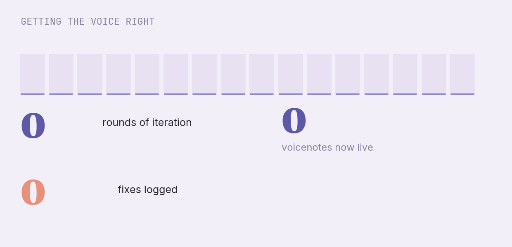
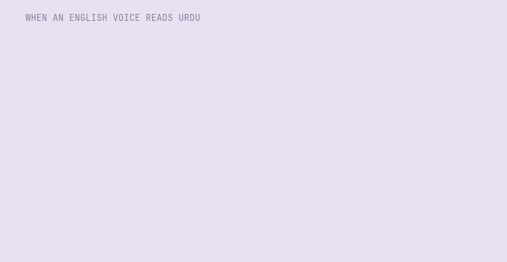

Across the world, teachers are handed scripted lessons and told to follow them to the letter. It is meant to help. It often feels like being asked to read someone else's words aloud. We tried the opposite: a lesson you can hear.
For decades, the fix for uneven teaching has been the script — structured, "teacher-proof" lesson plans that spell out every step. They raise the floor. But a page of instructions is a strange way to learn a craft that is spoken, paced, and felt. Teachers end up reading at their class instead of teaching it.
So Rumi made the lesson plan multimodal. Before a teacher takes a chapter, a short voice note arrives on WhatsApp — in her own language, in a warm human voice — not a script to recite, but a colleague who has taught this lesson before, telling her the one move that matters and the moment children usually get stuck.
It sounds simple. Making a machine voice that a teacher actually wants to listen to — in Urdu — was anything but.
A script tells a teacher what to say. A voice in your ear tells you how it should feel. Those are different things.— The design idea behind voicenote lesson plans
This is the kind of note a teacher hears the morning she teaches a chapter — 60 seconds, conversational, in Urdu, English kept only for the technical words.
Voice selection, pacing, and pronunciation — tuned over a month of daily listening.

An English-trained voice reading Urdu mangles the words — and a teacher hears it instantly.

The fix was a discipline, not a trick: write the script mostly in Urdu, keep only the technical words in English, spell numbers as words, and run every clip past an automatic check that blocks a bad take before it ever costs anything to produce.
402 lesson voicenotes and 46 chapter "hearts" are live today, generated for under five dollars a batch. Not a script to obey. A mentor to listen to — which is how teaching was always meant to be learned.
LIVE in production · May 2026